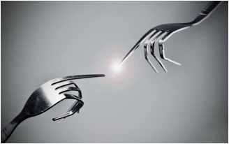
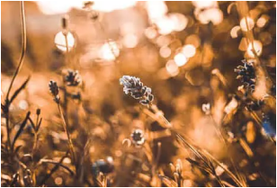
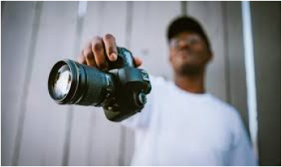

I prefer to let the photos do the talking so if you wish to know more just ask via hello@thewanderinglens.com, I'd love to hear from you. .
Since that trip in 2007 I became hooked on photographing patterns hidden within landscapes, extreme climates, cultures and the underwater world. My business The Wandering Lens, works with global brands producing visual content and image libraries/editorials for various publications, tourism/commercial clients and also operates as a travel photography site, which is now the leading publisher of travel guides for photographers.
FASHION PHOTOGRAPHY
FOOD & DRINK PHOTOGRAPHY
WEDDING PHOTOGRAPHY
Since that trip in 2007 I became hooked on photographing patterns hidden within landscapes, extreme climates, cultures and the underwater world. My business The Wandering Lens, works with global brands producing visual content and image libraries/editorials for various publications, tourism/commercial clients and also operates as a travel photography site, which is now the leading publisher of travel guides for photographers.
High Level have always been quick to react and very flexible, which has been invaluable over the past year when we have had some very busy periods with some very demanding clients. The speed of delivery and quality of work is first class.